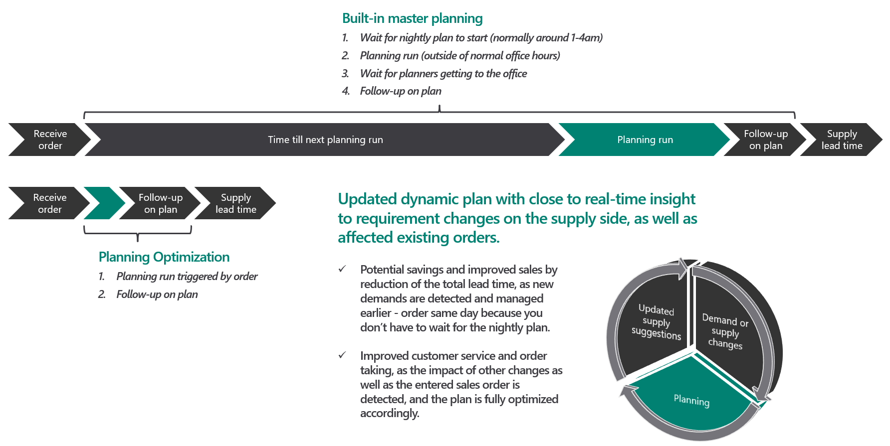

Planungsoptimierung – Übersicht
Important
Dynamics 365 for Finance and Operations hat sich zu speziell entwickelten Anwendungen entwickelt, mit denen Sie bestimmte Geschäftsfunktionen verwalten können. Weitere Informationen zu diesen Änderungen finden Sie im Dynamics 365-Lizenzierungshandbuch.
Das Planning Optimization Add-in für Microsoft Dynamics 365 Supply Chain Management ermöglicht die Berechnung der Masterplanung außerhalb von Dynamics 365 Supply Chain Management und der zugehörigen SQL-Datenbank. Zu den Vorteilen, die mit der Funktionalität der Planungsoptimierung verbunden sind, gehören eine verbesserte Leistung und minimale Auswirkungen auf die SQL-Datenbank während der Durchführung der Masterplanung. Schnelle Planungsläufe können auch während der Bürozeiten durchgeführt werden, so dass der Planer sofort auf Bedarfs- oder Parameteränderungen reagieren kann.
Um die Planungsoptimierung nutzen zu können, müssen Sie das Add-In Planungsoptimierung aus Ihrem Projekt in Microsoft Dynamics Lifecycle Services (LCS) installieren und die Funktionalität der Planungsoptimierung im Supply Chain Management einschalten. Weitere Informationen finden Sie unter Erststart mit Planungsoptimierung.
Die folgende Abbildung zeigt den Vorteil der Planungsoptimierung während der Bürozeiten.

Verbesserte Leistung
Die Planungsoptimierung kann in Szenarien eingesetzt werden, die langlaufende Masterpläne beinhalten. Es wurde speziell für sehr schnelle Berechnungen mit sehr großen Datenmengen entwickelt. Da es sich um einen hyperskalierbaren mandantenfähigen Dienst handelt, können mehrere Instanzen gleichzeitig zusammenarbeiten, um den Plan zu berechnen. Darüber hinaus entfernt der Planungsservice die Last der Masterplanung aus Ihrem System und arbeitet mit einem Datenstrom, der die Serverlast minimiert.
Die Planungsoptimierung kann Ihnen helfen, die folgenden Ziele zu erreichen:
- Verbessern Sie die Planungsleistung durch eine kürzere Laufzeit.
- Reduzieren Sie die Auswirkungen auf andere Prozesse während des Masterplanungslaufs.
- Führen Sie häufigere Planungsläufe durch. (Sie sind nicht auf tägliche Läufe beschränkt.)
- Seien Sie zuversichtlich, dass das zukünftige Geschäftswachstum das Planungssystem nicht überlastet.
Architektur und Datenfluss
Wenn das Planungsoptimierung Add-In aus dem LCS installiert wird, wird eine sichere Verbindung zum Dienst Planungsoptimierung hergestellt. Der Service befindet sich im selben Land oder in derselben Region des Rechenzentrums wie die zugehörige Supply Chain Management Instanz. Nach dem Einrichten der Planungsoptimierung werden zur Laufzeit der Masterplanung Stamm- und Bewegungsdaten aus dem Supply Chain Management an den Service Planungsoptimierung gesendet.
Wenn das Add-In Planungsoptimierung deinstalliert wird, werden alle zugehörigen Daten im Service Planungsoptimierung entfernt.
Hochwertiger Datenfluss für Regenerationsläufe
- Der Supply Chain Management Client sendet ein Signal, um von der Planungsoptimierung einen Planungslauf anzufordern.
- Die Planungsoptimierung fordert über den integrierten Konnektor die erforderlichen Daten an.
- Die SQL-Datenbank sendet die angeforderten Informationen über Setup-, Master- und Transaktionsdaten über den Konnektor an die Planungsoptimierung. Der Konnektor übersetzt Informationen zwischen Supply Chain Management und dem Service Planungsoptimierung.
- Der Service Planungsoptimierung hält planungsrelevante Daten im Speicher und führt die erforderlichen Berechnungen durch.
- Das Planungsergebnis wird über den Konnektor an die Supply Chain Management Datenbank gesendet. Zu den Ergebnissen gehören Informationen wie Planaufträge und Verursacherinformationen. Die Planungsoptimierung sendet ein Signal an das Supply Chain Management, um anzuzeigen, dass der Planungslauf abgeschlossen ist. Es sendet auch alle relevanten Meldungen und Warnungen.
Die folgende Abbildung zeigt den Datenfluss.

Zugehörige Ressourcen
Erste Schritte mit der Planungsoptimierung
Planungsoptimierung Fit-Analyse
Planhistorie und Planungsprotokolle anzeigen